Removal
WARNING:- Make sure lifts, jacks and safety stands are placed properly, and hoist brackets are attached to the correct position on the engine.
- Apply parking brake and block rear wheels, so car will not roll off stands and fall on you while working under it.
CAUTION: Use fender covers to avoid damaging painted surfaces.
1. Disconnect the battery negative ( - ) and positive ( + ) cables from the battery.
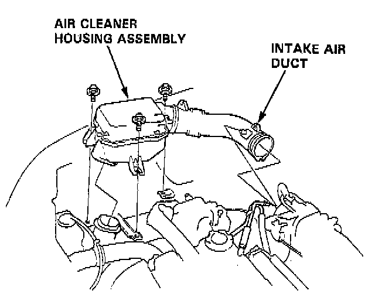
2. Remove the intake air duct and air cleaner housing assembly.
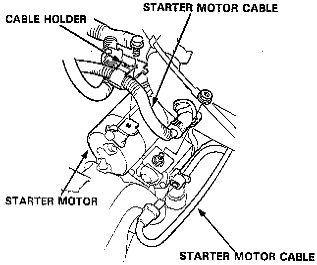
3. Remove the starter motor cables and cable holder from the starter motor.
4. Remove the transmission ground cable from the transmission hanger.
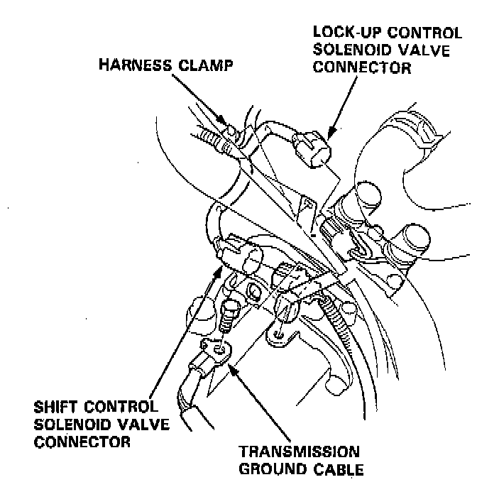
5. Disconnect the lock-up control solenoid valve connector and the shift control solenoid valve connector, then remove the harness clamp on the lock-up control solenoid harness from the harness stay.
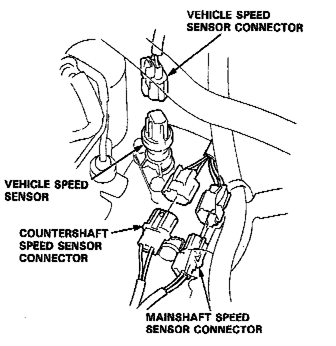
6. Disconnect the vehicle speed sensor (VSS), mainshaft speed sensor and countershaft speed sensor connectors.
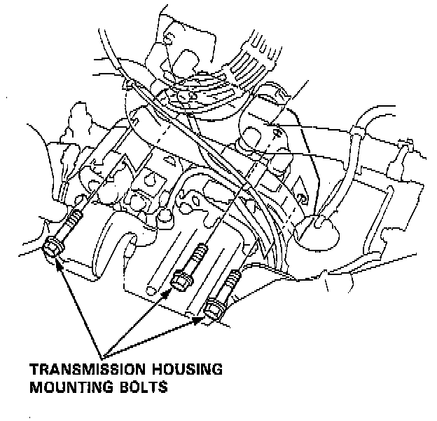
7. Remove the transmission housing mounting bolts.
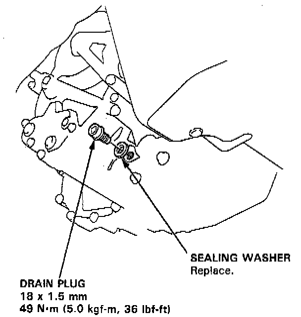
8. Remove the drain plug, and drain the automatic transmission fluid (ATF). Reinstall the drain plug with a new sealing washer.
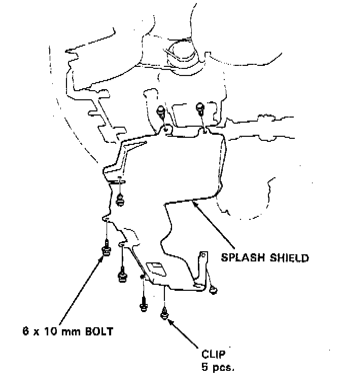
9. Remove the splash shield.
10. Remove the cotter pins and castle nuts, then separate the ball joints from the lower arm.
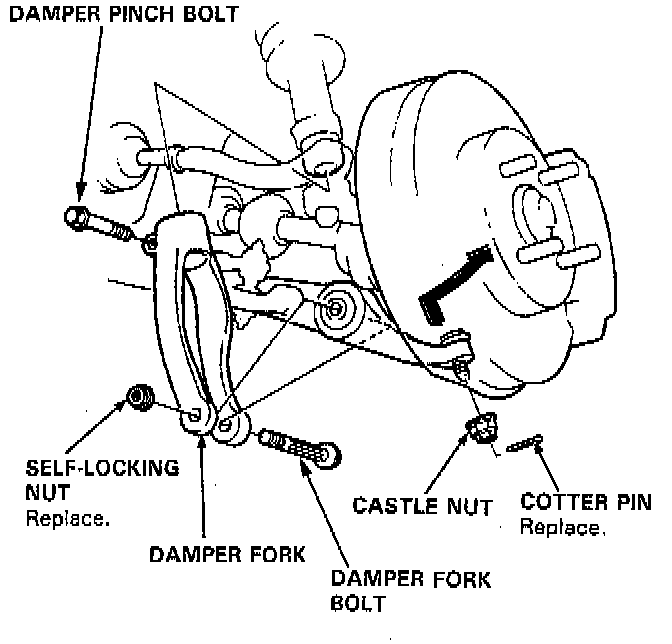
11. Remove the right damper fork bolt and damper pinch bolt, then separate right damper fork and damper.
12. Pry the right driveshaft out of the differential, and pry the left driveshaft out of the intermediate shaft.
13. Pull on the inboard joint, and remove the right and left driveshafts.
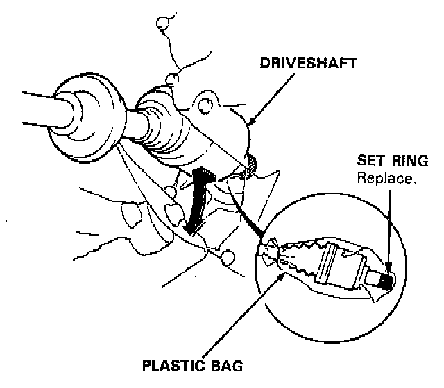
14. Tie plastic bags over the driveshaft ends.
NOTE: Coat all precision finished surfaces with clean engine oil.
15. Disconnect the heated oxygen sensor (H02S) connector.
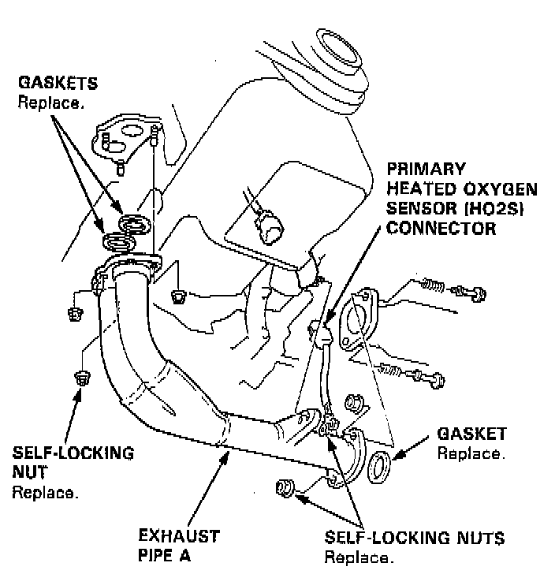
16. Remove the exhaust pipe A.
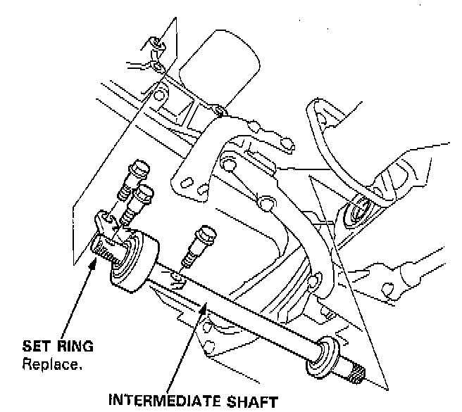
17. Remove the intermediate shaft.
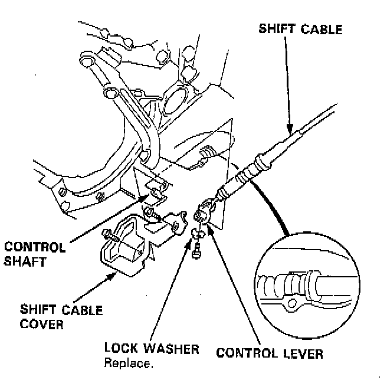
18. Remove the shift cable cover, then remove the shift cable by removing the control lever.
CAUTION: Take care not to bend the shift cable while removing it.
19. Remove the right front mount/bracket, then remove the end of the throttle control cable from the throttle control drum.
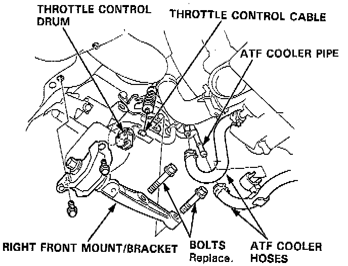
20. Remove the ATF cooler hoses at the ATF cooler pipes. Turn the ends of the cooler hoses up to prevent ATF from flowing out, then plug the Joint Pipes/ATF cooler pipes.
NOTE: Check for any sign of leakage at the hose joints.
21. Remove the engine stiffener and torque converter cover.
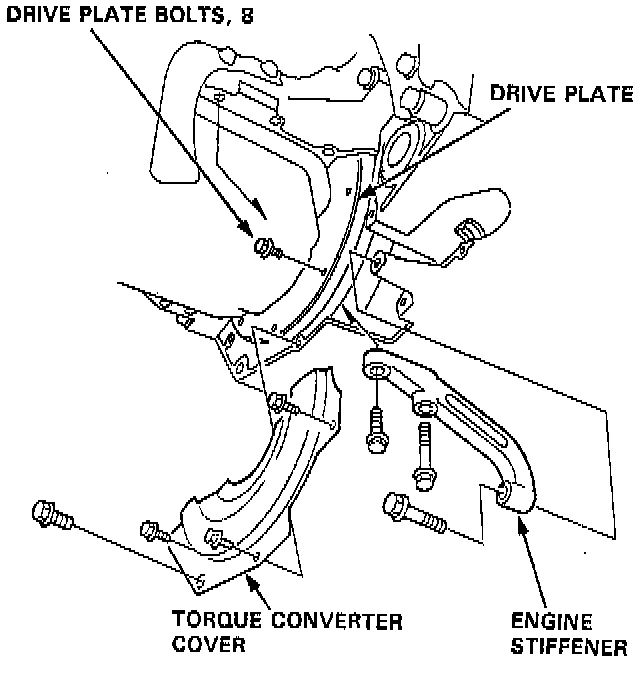
22. Remove the eight drive plate bolts one at a time while rotating the crankshaft pulley.
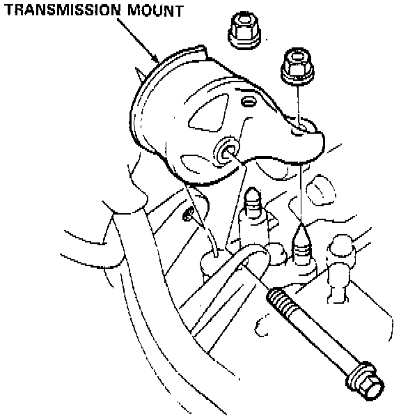
23. Place a jack under the transmission, raise the transmission just enough to take weight off of the mounts, then remove the transmission mount.
24. Remove the transmission housing mounting bolts and rear engine mounting bolts.
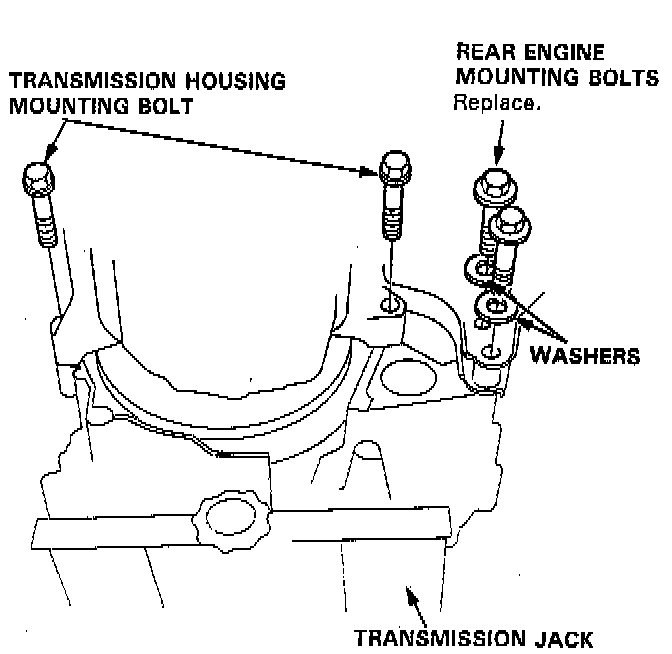
25. Pull the transmission away from the engine until it clears the 14 mm dowel pins, then lower it on the transmission jack.